Almost everything that occurs in the cell involves one or more proteins. Proteins provide structure, catalyze cellular reactions, and carry out a myriad of other tasks. Their central place in the cell is reflected in the fact that genetic information is ultimately expressed as protein. For each protein there is a segment of DNA (a gene; see Chapters 12 and 23) that encodes information specifying its sequence of amino acids. There are thousands of different kinds of proteins in a typical cell, each encoded by a gene and each performing a specific function. Proteins are among the most abundant biological macromolecules and are also extremely versatile in their functions.
The chapter begins with a discussion of some of the general properties of proteins. This is followed by a short summary of some common techniques used to purify and study proteins. Finally, we will examine the primary structure of protein molecules: the covalent backbone structure and the sequence of amino acid residues. One goal is to discover the relationships between amino acid sequence and biological function.
An understanding of these important
macromolecules must begin with the fundamentals. What do
proteins do? How big are they? What forms or shapes do
they take? What are their chemical properties? The
answers serve as an orientation to much that follows.Proteins Have Many Different Biological FunctionsWe can classify proteins according to their biological roles. Enzymes The most varied and most highly specialized proteins are those with catalytic activity-the enzymes. Virtually all the chemical reactions of organic biomolecules in cells are catalyzed by enzymes. Many thousands of different enzymes, each capable of catalyzing a different kind of chemical reaction, have been discovered in different organisms (Fig. 6-la). Transport Proteins Transport proteins in blood plasma bind and carry specific molecules or ions from one organ to another. Hemoglobin of erythrocytes (Fig. 6-lb) binds oxygen as the blood passes through the lungs, carries it to the peripheral tissues, and there releases it to participate in the energy-yielding oxidation of nutrients. The blood plasma contains lipoproteins, which carry lipids from the liver to other organs. Other kinds of transport proteins are present in the plasma membranes and intracellular membranes of all organisms; these are adapted to bind glucose, amino acids, or other substances and transport them across the membrane. |
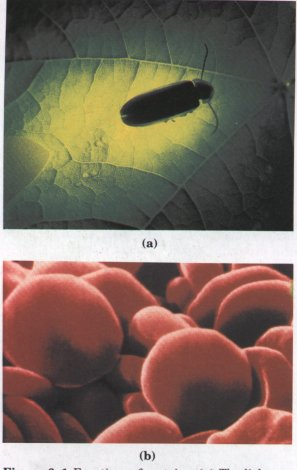 Figure 6-1 Functions
of proteins. (a) The
light produced by fireflies is the result of a
light-producing reaction involving luciferin and ATP that
is catalyzed by the enzyme luciferase (see Box 13-3). |
Nutrient and Storage Proteins The seeds of many plants store nutrient proteins required for the growth of the germinating seedling. Particularly well-studied examples are the seed proteins of wheat, corn, and rice. Ovalbumin, the major protein of egg white, and casein, the major protein of milk, are other examples of nutrient proteins (Fig. 6-lc). The ferritin found in some bacteria and in plant and animal tissues stores iron.
Contractile or Motile Proteins Some proteins endow cells and organisms with the ability to contract, to change shape, or to move about. Actin and myosin function in the contractile system of skeletal muscle and also in many nonmuscle cells. Tubulin is the protein from which microtubules are built. Microtubules act in concert with the protein dynein in flagella and cilia (Fig. 6-ld) to propel cells.
| Structural Proteins
Many proteins serve as supporting filaments, cables, or
sheets, to give biological structures strength or
protection. The major component of tendons and cartilage
is the fibrous protein collagen, which has very high
tensile strength. Leather is almost pure collagen.
Ligaments contain elastin, a structural protein capable
of stretching in two dimensions. Hair, fingernails, and
feathers consist largely of the tough, insoluble protein
keratin. The major component of silk fibers and spider
webs is fibroin (Fig. 6-le). The wing hinges of some
insects are made of resilin, which has nearly perfect
elastic properties. Defense Proteins Many proteins defend organisms against invasion by other species or protect them from injury. The immunoglobulins or antibodies, specialized proteins made by the lymphocytes of vertebrates, can recognize and precipitate or neutralize invading bacteria, viruses, or foreign proteins from another species. Fibrinogen and thrombin are blood-clotting proteins that prevent loss of blood when the vascular system is injured. Snake venoms, bacterial toxins, and toxic plant proteins, such as ricin, also appear to have defensive functions (Fig. 6-lf). Some of these, including fibrinogen, thrombin, and some venoms, are also enzymes. Regulatory Proteins Some proteins help regulate cellular or physiological activity. Among them are many hormones. Examples include insulin, which regulates sugar metabolism, and the growth hormone of the pituitary. The cellular response to many hormonal signals is often mediated by a class of GTP-binding proteins called G proteins (GTP is closely related to ATP, with guanine replacing the adenine portion of the molecule; see Figs. 1-12 and 3-16b. ) Other regulatory proteins bind to DNA and regulate the biosynthesis of enzymes and RNA molecules involved in cell division in both prokaryotes and eukaryotes (Fig. 6-ig). Other Proteins There are numerous other proteins whose functions are rather exotic and not easily classified. Monellin, a protein of an African plant, has an intensely sweet taste. It is being studied as a nonfattening, nontoxic food sweetener for human use. The blood plasma of some Antarctic fish contains antifreeze proteins, which protect their blood from freezing. |
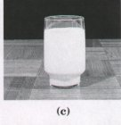 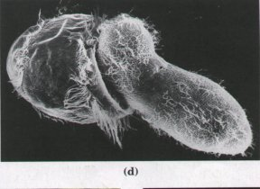 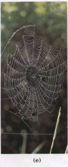 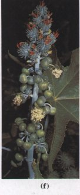 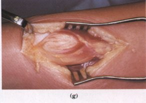 |
It is extraordinary that all these proteins, with their very different properties and functions, are made from the same group of 20 amino acids.
How long are the polypeptide chains in proteins? Table 6-1 shows that human cytochrome c has 104 amino acid residues linked in a single chain; bovine chymotrypsinogen has 245 amino acid residues. Probably near the upper limit of size is the protein apolipoprotein B, a cholesterol-transport protein with 4,536 amino acid residues in a single polypeptide chain of molecular weight 513,000. Most naturally occurring polypeptides contain less than 2,000 amino acid residues.
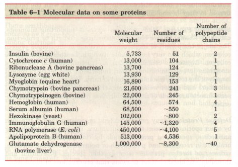
Some proteins consist of a single polypeptide chain, but others, called multisubunit proteins, have two or more (Table 6-1). The individual polypeptide chains in a multisubunit protein may be identical or different. If at least some are identical, the protein is sometimes called an oligomeric protein and the subunits themselves are referred to as protomers. The enzyme ribonuclease has one polypeptide chain. Hemoglobin has four: two identical α chains and two identical β chains, all four held together by noncovalent interactions.
The molecular weights of proteins, which can be determined by various physicochemical methods, may range from little more than 10,000 for small proteins such as cytochrome c (104 residues), to more than 106 for proteins with very long polypeptide chains or those with several subunits. The molecular weights of some typical proteins are given in Table 6-1. No simple generalizations can be made about the molecular weights of proteins in relation to their function.
One can calculate the approximate number of amino acid residues in a simple protein containing no other chemical group by dividing its molecular weight by 110. Although the average molecular weight of the 20 standard amino acids is about 138, the smaller amino acids predominate in most proteins; when weighted for the proportions in which the various amino acids occur in proteins (see Table 5-1), the average molecular weight is nearer to 128. Because a molecule of water (Mr 18) is removed to create each peptide bond, the average molecular weight of an amino acid residue in a protein is about 128 - 18 = 110. Table 6-1 shows the number of amino acid residues in several proteins.
| As is true for simple peptides, hydrolysis of proteins with acid or base yields a mixture of free α-amino acids. When completely hydrolyzed, each type of protein yields a characteristic proportion or mixture of the different amino acids. Table 6-2 shows the composition of the amino acid mixtures obtained on complete hydrolysis of human cytochrome c and of bovine chymotrypsinogen, the inactive precursor of the digestive enzyme chymotrypsin. These two proteins, with very different functions, also differ significantly in the relative numbers of each kind of amino acid they contain. The 20 amino acids almost never occur in equal amounts in proteins. Some amino acids may occur only once per molecule or not at all in a given type of protein; others may occur in large numbers. | 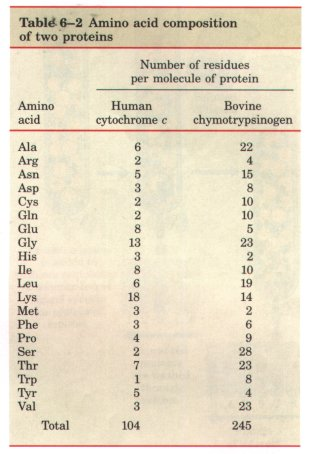 |
Many proteins, such as the enzymes ribonuclease and chymotrypsinogen, contain only amino acids and no other chemical groups; these are considered simple proteins. However, some proteins contain chemical components in addition to amino acids; these are called conjugated proteins. The non-amino acid part of a conjugated protein is usually called its prosthetic group. Conjugated proteins are classified on the basis of the chemical nature of their prosthetic groups (Table 6-3); for example, lipoproteins contain lipids, glycoproteins contain sugar groups, and metalloproteins contain a specific metal. A number of proteins contain more than one prosthetic group. Usually the prosthetic group plays an important role in the protein's biological function.
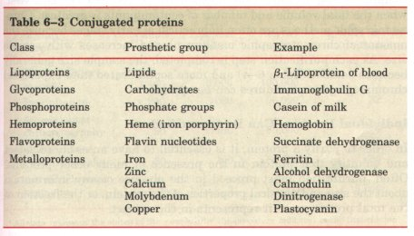
The aggregate biochemical picture of protein structure and function is derived from the study of many individual proteins. To study a protein in any detail it must be separated from all other proteins in a cell, and techniques must be available to determine its properties. The necessary methods come from protein chemistry, a discipline as old as biochemistry itself and one that retains a central position in biochemical research. Modern techniques are providing ever newer experimental insights into the critical relationship between the structure of a protein and its function.
Cells contain thousands of different kinds of proteins. A pure preparation of a given protein is essential before its properties, amino acid composition, and sequence can be determined. How, then, can one protein be purified?
Methods for separating proteins take advantage of properties such as charge, size, and solubility, which vary from one protein to the next. Because many proteins bind to other biomolecules, proteins can also be separated on the basis of their binding properties. The source of a protein is generally tissue or microbial cells. The cells must be broken open and the protein released into a solution called a crude extract. If necessary, differential centrifugation can be used to prepare subcellular fractions or to isolate organelles (see Fig. 2-24). Once the extract or organelle preparation is ready, a variety of methods are available for separation of proteins. Ion-exchange chromatography (see Fig. 5-12) can be used to separate proteins with different charges in much the same way that it separates amino acids. Other chromatographic methods take advantage of differences in size, binding affinity, and solubility (Fig. 6-2). Nonchromatographic methods include the selective precipitation of proteins with salt, acid, or high temperatures.
The approach to the purification of a "new" protein, one not previously isolated, is guided both by established precedents and common sense. In most cases, several different methods must be used sequentially to completely purify a protein. The choice of method is somewhat empirical, and many protocols may be tried before the most effective is determined. Trial and error can often be minimized by using purification procedures developed for similar proteins as a guide. Published purification protocols are available for many thousands of proteins. Common sense dictates that inexpensive procedures be used first, when the total volume and number of contaminants is greatest. Chromatographic methods are often impractical at early stages because the amount of chromatographic medium needed increases with sample size. As each purification step is completed, the sample size generally becomes smaller (Table 6-4) and more sophisticated (and expensive) chromatographic procedures can be applied.
In order to purify a protein, it is essential to have an assay to detect and quantify that protein in the presence of many other proteins. Often, purification must proceed in the absence of any information about the size and physical properties of the protein, or the fraction of the total protein mass it represents in the extract.
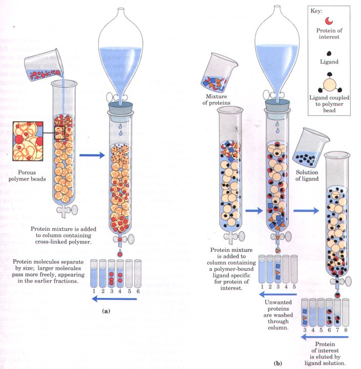
Figure 6-2 Two types of chromatographic methods used in protein purification. (a) Size-exclusion chromatography; also called gel filtration. This method separates proteins according to size. The column contains a cross-linked polymer with pores of selected size. Larger proteins migrate faster than smaller ones, because they are too large to enter the pores in the beads and hence take a more direct route through the column. The smaller proteins enter the pores and are slowed by the more labyrinthian path they take through the column. (b) Affinity chromatography separates proteins by their binding specificities. The proteins retained on the column are those that bind specifically to a ligand cross-linked to the beads. (In biochemistry, the term "ligand" is used to refer to a group or molecule that is bound. ) After nonspecific proteins are washed through the column, the bound protein of particular interest is eluted by a solution containing free ligand.
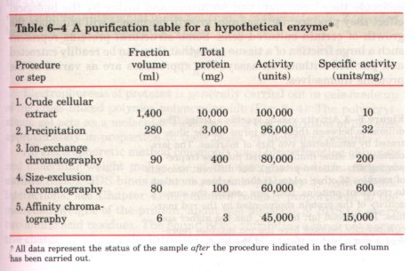
The amount of an enzyme in a given solution or tissue extract can be assayed in terms of the catalytic effect it produces, that is, the increase in the rate at which its substrate is converted to reaction products when the enzyme is present. For this purpose one must know (1) the overall equation of the reaction catalyzed, (2) an analytical procedure for determining the disappearance of the substrate or the appearance of the reaction products, (3) whether the enzyme requires cofactors such as metal ions or coenzymes, (4) the dependence of the enzyme activity on substrate concentration, (5) the optimum pH, and (6) a temperature zone in which the enzyme is stable and has high activity. Enzymes are usually assayed at their optimum pH and at some convenient temperature within the range 25 to 38 °C. Also, very high substrate concentrations are generally required so that the initial reaction rate, which is measured experimentally, is proportional to enzyme concentration (Chapter 8).
| By international agreement, 1.0 unit of
enzyme activity is defined as the amount of enzyme
causing transformation of 1.0 μmol of substrate per
minute at 25 °C under optimal conditions of measurement.
The term activity refers to the total
units of enzyme in the solution. The specific
activity is the number of enzyme units per
milligram of protein (Fig. 6-3). The specific activity is
a measure of enzyme purity: it increases during
purification of an enzyme and becomes maximal and
constant when the enzyme is pure (Table 6-4). After each purification step, the activity of the preparation (in units) is assayed, the total amount of protein is determined independently, and their ratio gives the specific activity. Activity and total protein generally decrease with each step. Activity decreases because some loss always occurs due to inactivation or nonideal interactions with chromatographic materials or other molecules in the solution. Total protein decreases because the objective is to remove as much nonspecific protein as possible. In a successful step, the loss of nonspecific protein is much greater than the loss of activity; therefore, specific activity increases even as total activity falls. The data are then assembled in a purification table (Table 6-4). A protein is generally considered pure when further purification steps fail to increase specific activity, and when only a single protein species can be detected (by methods to be described later). |
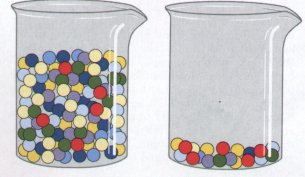 Figure 6-3 Activity versus specific activity. The difference between these two terms can be illustrated by considering two jars of marbles. The jars contain the same number of red marbles (representing an unknown protein), but different amounts of marbles of other colors. If the marbles are taken to represent proteins, both jars contain the same actiuity of the protein represented by the red marbles. The second jar, however, has the higher speci~c actiuity because here the red marbles represent a much higher fraction of the total. |
For proteins that are not enzymes, other quantification methods are required. Transport proteins can be assayed by their binding to the molecule they transport, and hormones and toxins by the biological effect they produce; for example, growth hormones will stimulate the growth of certain cultured cells. Some structural proteins represent such a large fraction of a tissue mass that they can be readily extracted and purified without an assay. The approaches are as varied as the proteins themselves.